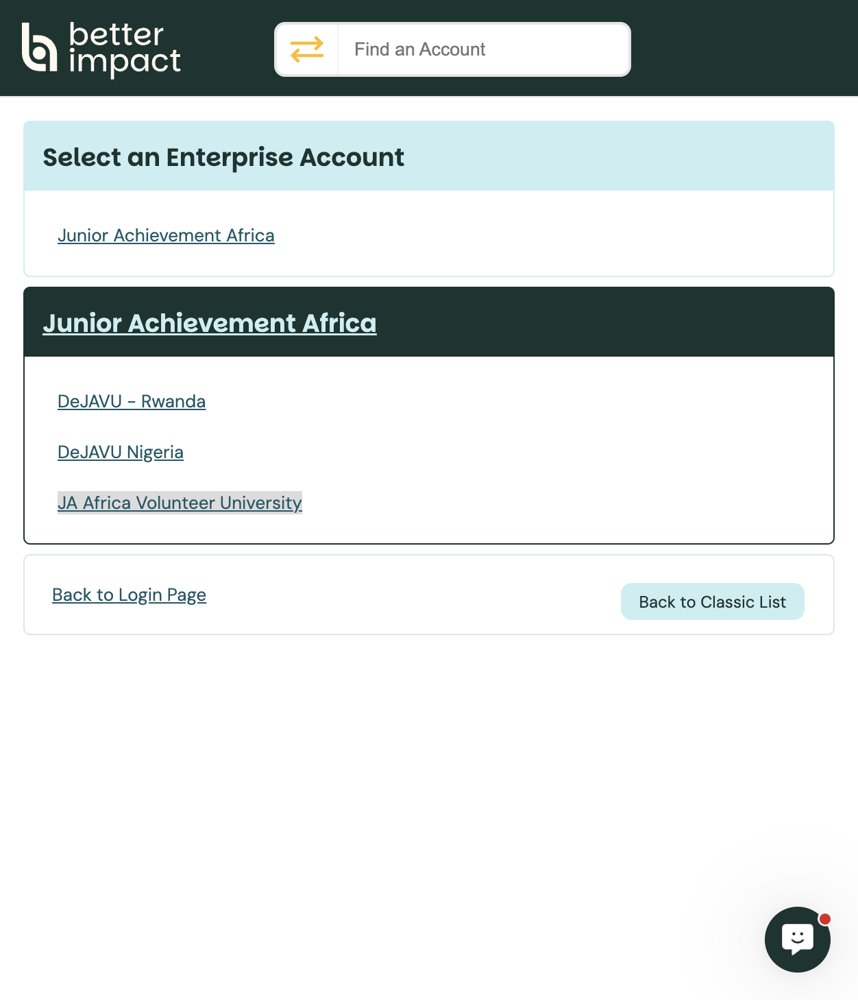

Admin guide
Audience · AdministratorEnterprise & Sub-Accounts
DeJAVU sits under a Better Impact Enterprise account. After admin login you choose which organisation (sub-account) to work in.
Admin portal: app.betterimpact.com/Login/Admin
What you see after login
Admins with access to more than one organisation land on Select an Enterprise Account. Choose the enterprise, then open the sub-account you need.

Enterprise Sub-accountsJA Africa layout (Phase 1)
Enterprise account: Junior Achievement Africa — the umbrella for DeJAVU organisations.
Main organisation (Phase 1): JA Africa Volunteer University. Use this account to create opportunities, accept new volunteer signups, and run day-to-day volunteer management.
By default, volunteers who apply via volunteers.ja-africa.org join the JA Africa Volunteer University organisation.
Other sub-accounts already listed (for example DeJAVU Nigeria and DeJAVU – Rwanda) appear here only if your admin profile has access to them. In Phase 2, more country and corporate-partner organisations will show the same way.
Other options (Better Impact)
In Better Impact, an Enterprise account is an umbrella that can contain multiple organisation sub-accounts (branches, locations, departments, or regions). Each sub-account has its own volunteers, activities, and settings.
Beyond the Phase 1 default, Better Impact also supports:
- Working only in one organisation if your admin access is limited to that sub-account
- Opening the Enterprise account itself for cross-organisation monitoring (statuses, hours, schedules) when you have Enterprise admin rights
- Optional enterprise features (for example shared branding, note/email visibility across sub-accounts, or Regions) — usually enabled by Better Impact Support on request
- Adding further sub-accounts later (billing contact or Enterprise Primary Admin contacts Support)
Reference: Account set-up: Enterprise considerations · Optional enterprise features